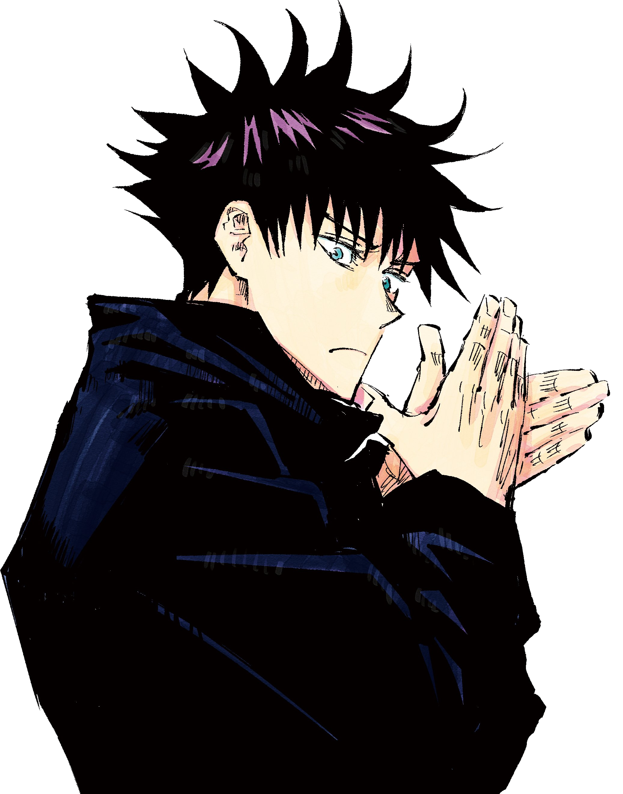

¿Quién es Megumi Fushiguro?

Megumi Fushiguro (伏黒恵) es uno de los protagonistas centrales de Jujutsu Kaisen. Es un estudiante de primer año en la Escuela Técnica de Magia de Tokio (Tokyo Jujutsu High) y compañero de clase de Yuji Itadori y Nobara Kugisaki. Como hijo de Toji Fushiguro, es el heredero de la Técnica Maldita de las Diez Sombras (Ten Shadows Technique), la técnica familiar del prestigioso Clan Zenin.
A pesar de su juventud, es un hechicero de grado 2 y se le considera un genio con un potencial comparable al de los hechiceros más fuertes.
Personalidad
Megumi es una persona tranquila, seria y reservada que rara vez habla de sí mismo. Su personalidad se define por un exterior estoico, distante y calculador, que oculta un profundo sentido de la justicia personal. Aunque no se considera un héroe, desea proteger a las personas que considera buenas o amables, creyendo que el mundo es injusto y que un hechicero es una herramienta para dar a esas personas más oportunidades de vivir.